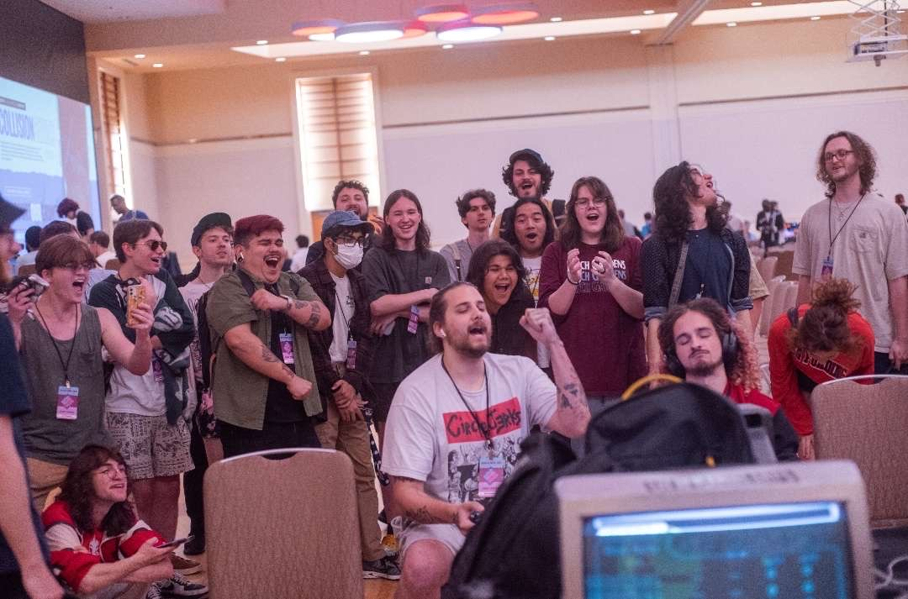

I'm a student at Cape Fear Community College pursuing Information Systems Engineering, transferring to UNCW for a B.S. in Intelligent Systems Engineering. My long-term goal is R&D in cognitive systems and accessibility technology — building tools that improve the lives of others, particularly elderly and disabled communities.
My path into engineering is personal. My grandfather was an engineer, and I always admired him for it. After losing him to cancer, I redirected my focus toward the analytical and academic pursuits I'd previously set aside. Engineering felt like both a tribute to him and the right outlet for the way my mind actually works.
To support myself through school, I work as a tattoo artist — a creative discipline I've practiced for years that keeps me grounded between the technical and the artistic sides of who I am.
I want my work to mean something. What I build should genuinely improve people's lived experience — not just in theory, but in measurable ways. I'm especially drawn to combining systems engineering with psychology to develop frameworks for emerging issues at the intersection of mental health and technology, including the psychological effects of human–AI interaction.
Eccentric, curious, and openly enthusiastic about the ideas I'm working through. Analytical and experimental, with a creative core that still shapes how I approach problems. Easygoing and quick to joke — but I take the work itself seriously.
Four columns, one operator. The technical and analytical columns fund the engineering work; the creative column funds the schooling; the interpersonal column is what makes any of it useful to anyone else.

Competing at Patchwork, a Super Smash Bros. Melee tournament. Fighting games are a long-running interest of mine and a community I've built genuine connections through.
UNCW's Intelligent Systems Engineering program is a four-year interdisciplinary degree that bridges engineering and computing — the exact intersection my career goals live in. It combines hardware and software design, AI, and human-centered engineering, supported by faculty with strengths in machine learning, robotics, and the Internet of Things.
The program is built around outcomes I genuinely care about: understanding the societal impact of AI, designing systems that work in real-world conditions, and communicating complex engineering solutions effectively.
The ML & AI concentration directly aligns with my interest in cognitive systems and accessibility technology — where ML-driven design meaningfully improves lived experience.
The core ISE curriculum — Calculus, Physics, programming, engineering foundations — is rigorous and prescriptive. I've used my elective slots intentionally, with two priorities:
Tattooing isn't just income — it's an active creative practice that requires continuous skill development. Studio art electives invest in the same skillset that pays my tuition.
I'm building technology to serve people — particularly cognitive systems & accessibility. Psychology gives me a foundation for the human–AI interaction research I want to do.
I already speak Spanish. Cutting-edge work in AI, robotics, and intelligent systems is happening in Mandarin-speaking research communities. Literacy opens access I'd otherwise be locked out of.
The future of engineering won't reward purely technical specialists. It will reward people who move between disciplines, translate between technical and human concerns, and see the full landscape of a problem.
| University | UNC Wilmington (UNCW) |
| Program | B.S. Intelligent Systems Engineering |
| Concentration | Machine Learning & AI |
| Pathway | CFCC A.S. → UNCW B.S. via CAA |
UNCW's official 2024–25 AS-to-ISE transfer guide is the framework for every CFCC course I select. Completing the A.S. before transfer qualifies me for the University Studies waiver under the CAA — UNCW gen-ed considered fulfilled.
UNCW's guaranteed-admission program for NC community college students completing an AA, AS, AE, AATP, ASTP, or AFA. Early access to transfer resources, advising from a transfer success coach, and an application-fee waiver. Open year-round.
Direct-admit partnership for students with 3.2+ GPA & 12–30 credit hours. Includes direct admission to UNCW, a free sponsored class while at CFCC, a one-time $2,000 first-year scholarship, and a dedicated UNCW advisor and mentor.
UNCW's Fixed Tuition Program locks in tuition for incoming cohorts. Average net price after scholarships and grants is ~$18,709; 46% of students receive financial aid.
Primary self-funded contribution. Consistent, flexible income that scales with hours — and the reason I've prioritized art electives at CFCC.
Filing each year by UNCW's March 1 priority deadline to maximize grants and subsidized loans.
Pre-Hawk $2,000 first-year · UNCW general scholarship app · CFCC Foundation · CSE major awards.
Staying in Wilmington keeps housing costs significantly lower than relocating.
More than 500 students, competitive teams, campus events, and broader esports connections. With deep roots in the FGC — Melee, Street Fighter, Tekken, 2XKO, Strive — this is the most natural community for me on campus.
ISE is supported by faculty with active research in ML, AI, robotics, IoT, and cyber-physical systems. With a long-term goal of R&D in cognitive systems and accessibility, getting involved early is essential.
"This matters for the Wilmington community because the Cape Fear River is not just a navigation channel for large vessels, but a critical source of drinking water, coastal ecosystems, and resilience against rising ocean levels."
What are the potential ecological and public-health consequences of the Wilmington Harbor 403 Deepening Project — the proposal to deepen the Cape Fear River's federal navigation channel from 44 ft to 47 ft?
The Cape Fear River runs through Wilmington — the city I live in and the city I'm transferring to UNCW in. Harbor 403 is an active proposal with real consequences for local ecology, drinking water, and coastal resilience.
SOURCES: Kotlarz et al. · Culbertson · Parsons et al. · investigative journalism · Draft EIS
The peer-reviewed research, journalism, and technical review demonstrate that the project's environmental analysis underestimates compounding risks — and proposed mitigation does not credibly offset the projected damage. A more comprehensive review is necessary before a project of this scale moves forward.
A multi-agent AI harness with self-recursive improvement.
STATUS · IN ACTIVE DEVELOPMENT
This is the project that connects the portfolio — AI work, cognitive-systems research, cross-disciplinary thinking. Evidence I'm already doing the work.
A multi-agent AI system I'm building as a daily-driver IDE. It coordinates specialized agents to tackle long-horizon engineering projects. Human-in-the-loop intention mapping keeps the system aligned with the operator's goals.
Mindlock currently targets itself. An autopilot drives implementation and debugging — agents improving the system that produced them, under human oversight.
Ongoing development on Mindlock. Additional dev-team experience under non-disclosure agreements.
Volunteer service supporting a critical local resource for survivors of domestic violence.
Self-employment that funds my education and sustains the artistic discipline I draw on across all of my work. Active member of the competitive fighting-game community — Smash Melee, Street Fighter, Tekken, 2XKO, Strive — built community through tournaments including Patchwork.
Before this class, my approach to college was reactive — show up, do the work, figure out the next step when it arrived. Working through the University Research Table, the BDP analysis, and this portfolio forced me to build an actual plan: a target program, course sequence, transfer timeline, and financial strategy.
The class also introduced me to the SMART goals framework, which I've applied directly inside Mindlock's planning agents to keep long-horizon projects from drifting. That's the cross-application I value: a planning concept from a college-success class becoming a usable component in a multi-agent AI system.
The next two years are about turning the plan into the degree, and the degree into the work I actually want to do.
FULL APA CITATIONS TO BE ADDED